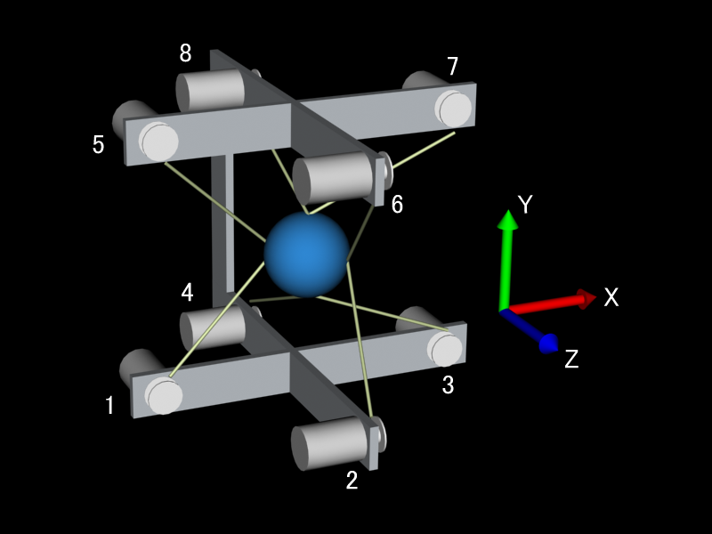
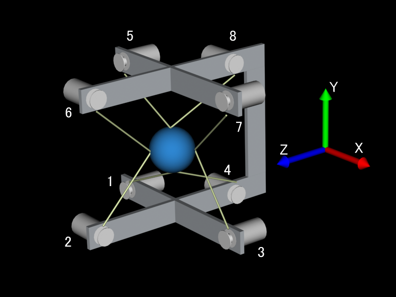

※ 注 意 ※
PCの電源投入時にコントローラの電源がオンになっている場合、PCが起動しない場合があります。
PCの電源投入時にはコントローラの電源がオフになっていることを確認してください。
本ソフトウェアのトップディレクトリ（AHS2009）を好きな場所（利用や開発する上で都合のよい場所）に置いてください。
以下の説明では Cドライブの直下にインストール（コピー）した場合を例にします。
インストールディレクトリを「C:¥AHS2009」とし，よってディレクトリ構成は
C:¥AHS2009
├─bin Pathに追加するディレクトリ
├─Driver デバイスドライバのディレクトリ
├─include インクルードファイルのディレクトリ
└─lib ライブラリファイルのディレクトリ
として説明します。
コントローラを初回接続した場合に必要になります。（PC側のUSBの接続ポートを変えた場合にも必要になることがあります。）
・コントローラの電源が切れていることを確認する。
・USBをPCに接続する。
・コントローラの電源を入れる。
・デバイスドライバのインストールが開始されますので、本ライブラリのDriverディレクトリを指定してください。
32bits版 Windows7用 デバイスドライバのインストール方法について
・正常に終了すればデバイスドライバのインストールは完了です。
システムを実行するのに必要です。
・各自の環境に合わせて、環境変数PATHに本ライブラリのbinディレクトリを追加してください。
例）path=C:¥AHS2009¥bin （※注意：これはあくまで例です。各自の環境に合わせて設定してください．）
また、環境変数の設定のためのスクリプトを用意しました。トップディレクトリにある path_install.wsf スクリプトファイルです。
このスクリプトファイルは、このスクリプトファイルと同じディレクトリ内にあるbinディレクトリを「ユーザ環境変数」の「Path」に追加します。
「システム環境変数」ではなく「ユーザ環境変数」ですので、注意してください。
すでに設定している場合で、binディレクトリの場所に変更がなければ実行する必要はありません。
また、環境変数の重複などは考慮されませんので、再度スクリプトを実行する場合は、環境変数が正しく設定されているか各自確認してください。 環境変数の確認方法はWindowsのバージョンによって異なりますので、各自インターネットなどで調べてください。
PATHの設定 WindowsXP/2000の場合
PATHの設定 WindowsVista場合
コンパイル（アプリケーション開発）するために必要です。
・インクルードディレクトリの設定
本ライブラリのincludeディレクトリを追加してください。
例）
「ツール」
->「オプション」
->「プロジェクトおよびソリューション」
->「VC++ディレクトリ」
->「ディレクトリを表示するプロジェクト」
->「インクルードファイル」
->「C:¥AHS2009¥include」を追加（本ソフトウェアをインストールしたディレクトリがC:¥AHS2009とする）
その他、プロジェクトごとに設定することなども可能です。 詳しくはVisualStudioC++を参照してください。
コンパイル（アプリケーション開発）といくつかのサンプルプログラムを実行するために必要になることがあります。
・glutについて（すでに下記の項目が実行されていれば問題ありません。）
・include/glutディレクト下にglut.hを追加してください。
・libディレクト下にglut32.libを追加してください。
・binディレクト下にglut32.dllを追加してください。
・サンプルプログラムを実行し正常に動作するか確認してください。
・インストールは以上で終了です。
・以後はVisual Studio C++ などの開発環境で各自のアプリケーションを作成してください。
皆様の素晴らしい発想のもと開発されるアプリケーションを期待します。

SPIDAR-G（X型フレームタイプ） 右手 ワイヤの貼り方

SPIDAR-G（X型フレームタイプ） 左手 ワイヤの貼り方